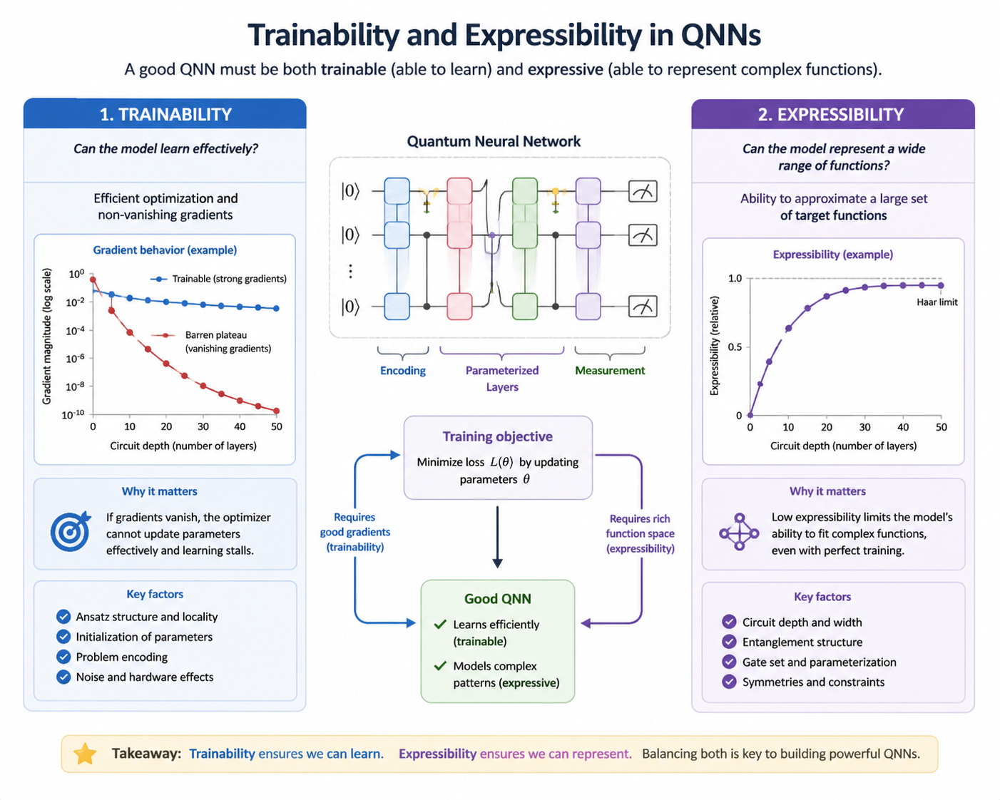
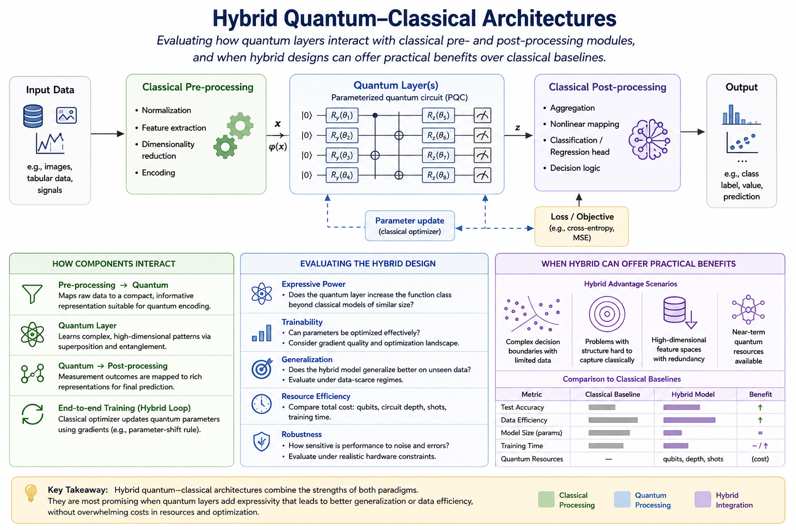
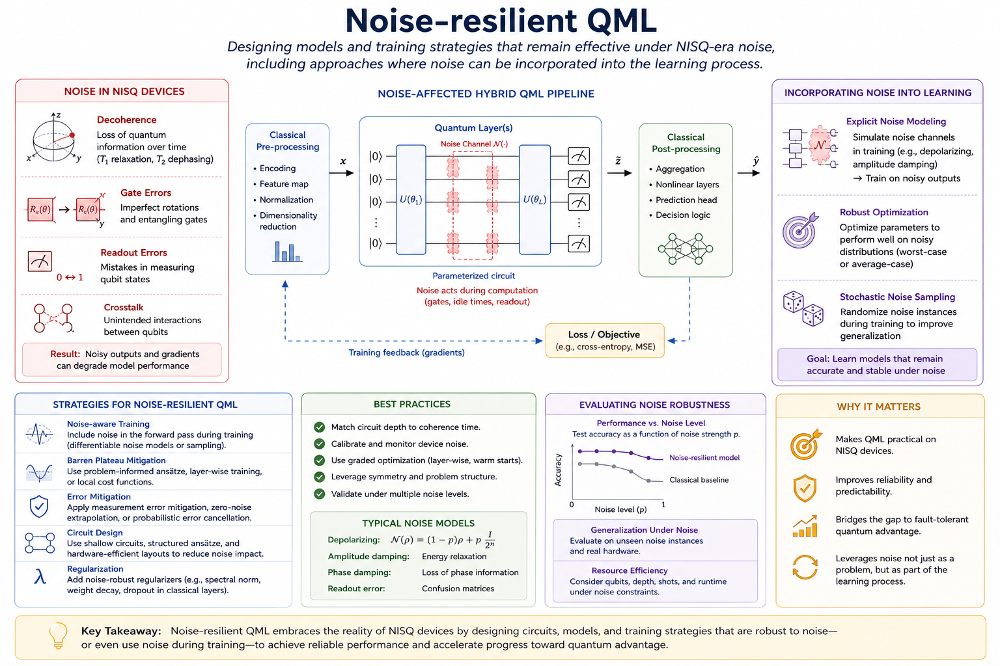
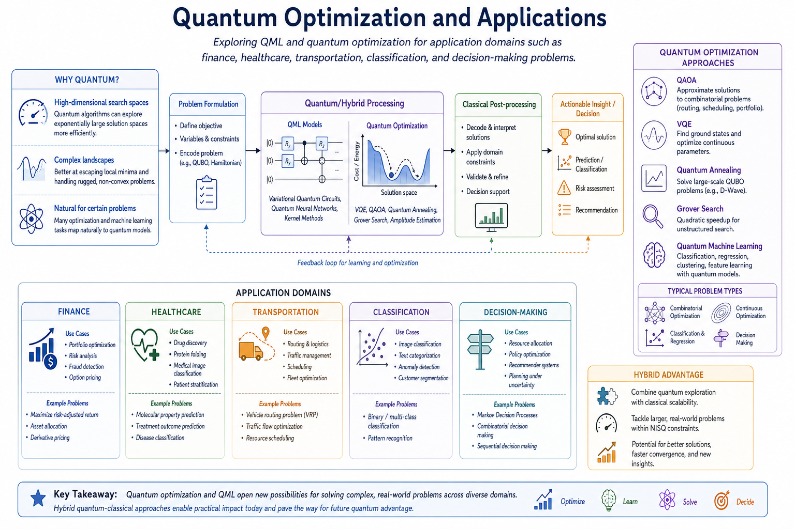
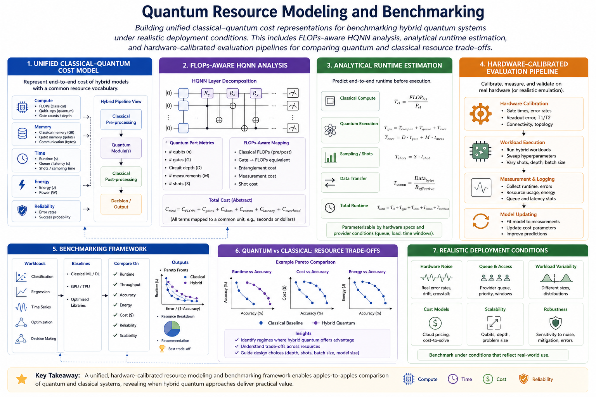
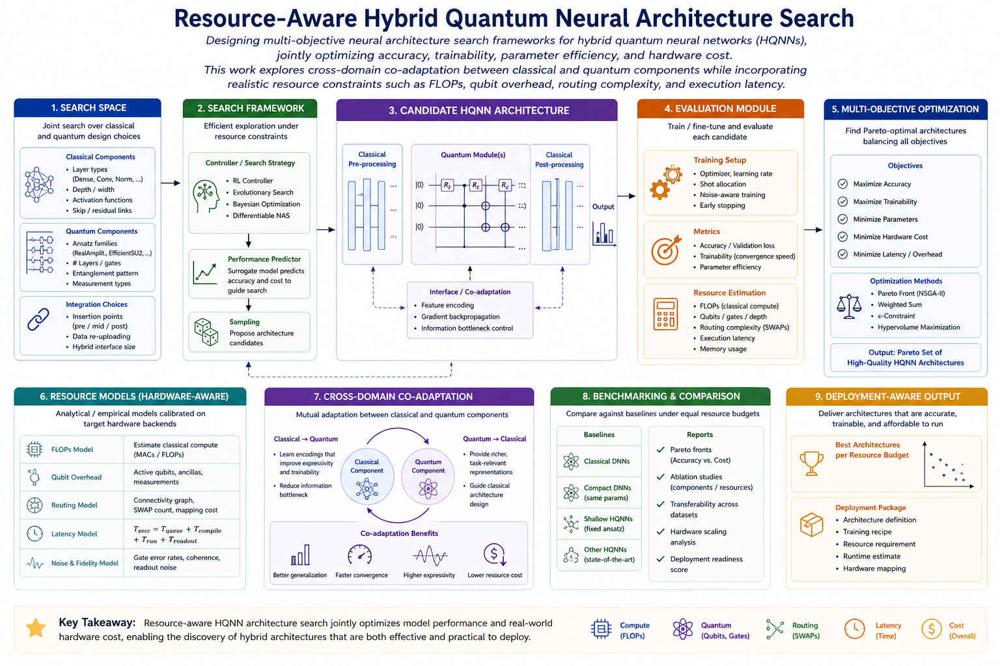
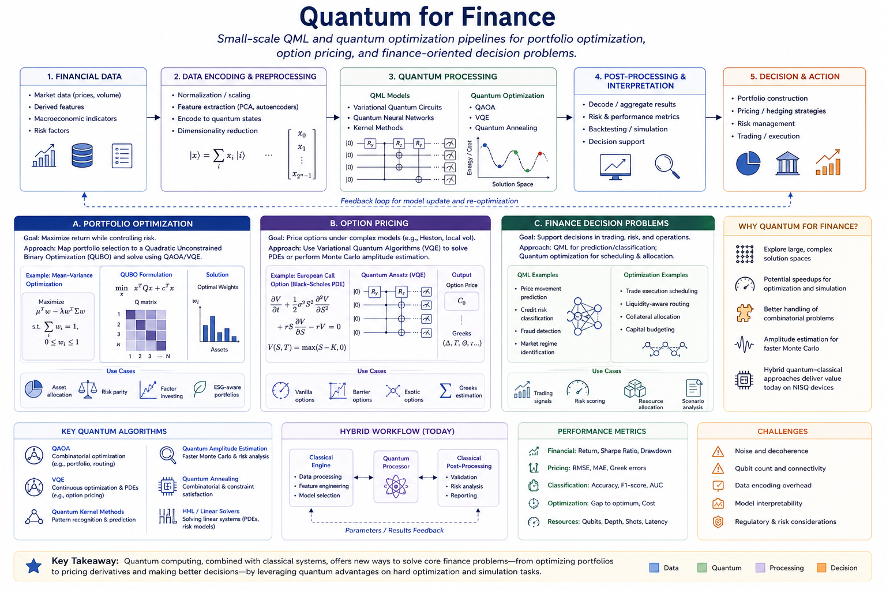

ACM/IEEE Design Automation Conference (DAC)
Presented work on computational advantage in hybrid quantum neural networks.
Postdoctoral Research Associate · Center for Quantum and Topological Systems, NYU Abu Dhabi
I am a researcher in quantum machine learning and quantum algorithms, with a focus on designing trainable, noise-resilient, and hardware-aware quantum learning models for near-term quantum systems.
My research investigates how hybrid quantum-classical architectures can be designed, analyzed, and benchmarked beyond idealized circuit assumptions. I am particularly interested in trainability, barren plateau mitigation, expressibility, quantum neural architecture search, and practical quantum algorithms for real-world applications.
Trainability and expressibility of quantum neural networks, barren plateau mitigation, noise-resilient QNN design, and hybrid quantum-classical learning systems.
Hardware-aware quantum algorithms, quantum architecture search, analytical quantum cost modeling, and QML applications in finance, healthcare, classification, and path planning.
Selected research directions and project areas connecting quantum machine learning, hybrid quantum-classical architectures, and practical near-term quantum algorithms.
Investigating how trainability and expressibility interact in parameterized quantum circuits and hybrid quantum neural networks. This includes studying barren plateaus, gradient propagation, circuit depth/width trade-offs, and how hybrid architectures reshape optimization landscapes beyond standard PQC assumptions.
Current work focuses on understanding whether the commonly assumed expressibility–trainability trade-off still holds in hybrid quantum-classical models and how this impacts neural architecture search for QML systems.

Exploring how quantum layers interact with classical pre-processing and post-processing modules in hybrid learning systems. Research investigates when quantum layers provide practical benefits in representation learning, optimization, robustness, and generalization under near-term hardware constraints.
This includes hybrid quantum neural networks, hardware-aware architectures, noise-resilient QML, and resource-aware quantum neural architecture search methods.

Designing quantum learning models and training strategies that remain robust under realistic noise and imperfect quantum operations. This includes studying whether noise can sometimes aid optimization, improve generalization, or mitigate barren plateau effects in near-term quantum systems.
Current work explores noise-aware training, hardware-aware QML, quantum error mitigation, and robust hybrid architectures for deployment on NISQ-era processors.

Exploring quantum machine learning and quantum optimization for real-world application domains including finance, healthcare, transportation, classification, and decision-making systems.
Research investigates how variational quantum algorithms and hybrid optimization workflows can provide scalable solutions under realistic computational and hardware constraints.

Building unified classical–quantum cost representations for benchmarking hybrid quantum systems under realistic deployment conditions. This includes FLOPs-aware HQNN analysis, analytical runtime estimation, and hardware-calibrated evaluation pipelines for comparing quantum and classical resource trade-offs.
The goal is to establish realistic benchmarking methodologies that move beyond idealized quantum evaluations and enable practical comparison between classical and hybrid systems.

Designing multi-objective neural architecture search frameworks for hybrid quantum neural networks (HQNNs), jointly optimizing accuracy, trainability, parameter efficiency, and hardware cost.
This work explores cross-domain co-adaptation between classical and quantum components while incorporating realistic resource constraints such as FLOPs, qubit overhead, routing complexity, and execution latency.

Developing hybrid quantum-classical workflows for portfolio optimization, option pricing, risk analysis, and finance-oriented decision-making problems.
Current interests include quantum optimization algorithms, variational quantum circuits for financial modeling, and resource-aware quantum pipelines for practical financial applications.

Selected publications are curated manually. The complete publication list below is designed to be fetched from ORCID and grouped by publication type.
Highlighted papers related to quantum machine learning, hybrid quantum neural networks, trainability, and quantum algorithms.
Selected publications will appear after ORCID publications are loaded.
Selected conference presentations and research talks.
Presented work on computational advantage in hybrid quantum neural networks.
Presented research on quantum algorithms for portfolio optimization.
Presented work on parameter initialization and barren plateaus in QNNs.
For research collaborations, student projects, invited talks, reviewing opportunities, or discussions related to QML and quantum algorithms, please reach out by email.
I am interested in collaborations on quantum machine learning, hybrid QNNs, efficient quantum architecture search, and application-driven quantum algorithms.